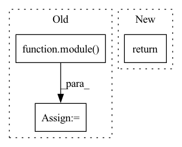

Pattern ID :31980
Before Change
feat[-1] = self.extra_block(feat[-1])
feat = self.neck(feat)
outputs = {name: module( feat) for name, module in self.heads.items()}
return outputs
def compute_loss(self, outputs: Dict[str, torch.Tensor], targets: List[Dict[str, Union[List, int]]]):After Change
// feat = self.neck(feat)
// outputs = {name: module(feat) for name, module in self.heads.items()}
// return outputs
return self.model(x)
def compute_loss(self, outputs: Dict[str, torch.Tensor], targets: List[Dict[str, Union[List, int]]]) -> Dict[str, torch.Tensor]:
passIn pattern: SUPERPATTERN
Frequency: 3
Non-data size: 3
Instances Fragment ID: 93477154
Project Name: gau-nernst/centernet-lightning
Commit Name: 655d895e888f80f6a643e1b9b14d3d4ccb5e7930
Time: 2022-01-18
Author: gau.nernst@yahoo.com.sg
File Name: centernet_lightning/models/meta.py
M Class Name: MetaCenterNet
N Class Name: MetaCenterNet
M Method Name: get_output_dict(2)
N Method Name: get_output_dict(2)
M Parent Class: pl.LightningModule
N Parent Class: pl.LightningModule
M File Name: centernet_lightning/models/meta.py
N File Name: centernet_lightning/models/meta.py
M Start Line: 85
M End Line: 91
N Start Line: 98
N End Line: 98
Before Change
// will be reused in sequence embedding all2all
awaitables = []
for module, features in zip(self._input_dists, features_by_shards):
tensor_awaitable = module(
SparseFeatures(
id_list_features=features,
id_score_list_features=None,
)
)
tensor_awaitable = tensor_awaitable.wait() // finish lengths all2all
input_splits = []
output_splits = []
if isinstance(tensor_awaitable, SparseFeaturesIndicesAwaitable):After Change
) -> Awaitable[SparseFeaturesList]:
lengths_awaitables = self.lengths_dist(ctx, features)
indices_awaitables = lengths_awaitables.wait()
return SparseFeaturesListAwaitable(indices_awaitables)
def compute(
self, ctx: ShardedModuleContext, dist_input: SparseFeaturesList Fragment ID: 93477159
Project Name: facebookresearch/torchrec
Commit Name: 5ef1b8110864170132d16e681f205f23b44aceb3
Time: 2022-09-15
Author: zhouwang@fb.com
File Name: torchrec/distributed/embedding.py
M Class Name: ShardedEmbeddingCollection
N Class Name: ShardedEmbeddingCollection
M Method Name: input_dist(3)
N Method Name: input_dist(3)
M Parent Class: FusedOptimizerModule,Subscript
N Parent Class: FusedOptimizerModule,Subscript
M File Name: torchrec/distributed/embedding.py
N File Name: torchrec/distributed/embedding.py
M Start Line: 436
M End Line: 486
N Start Line: 511
N End Line: 513
Before Change
def forward(self, input):
for module in self:
input = module( input)
return input
def set_caching(module, tensor_name):After Change
"Size of original tensor: {} "
"Size of parametrized tensor: {}".format(self.original.size(), x.size())
)
return x
def _inject_new_class(module: Module) -> None: Fragment ID: 93477163
Project Name: lezcano/geotorch
Commit Name: 82b3c25ed0abbe4ee69bb6bc0c35e77d0dbcc356
Time: 2021-04-08
Author: lezcano-93@hotmail.com
File Name: geotorch/parametrize.py
M Class Name: ParametrizationList
N Class Name: ParametrizationList
M Method Name: forward(1)
N Method Name: forward(2)
M Parent Class: ModuleList
N Parent Class: ModuleList
M File Name: geotorch/parametrize.py
N File Name: geotorch/parametrize.py
M Start Line: 57
M End Line: 60
N Start Line: 108
N End Line: 117